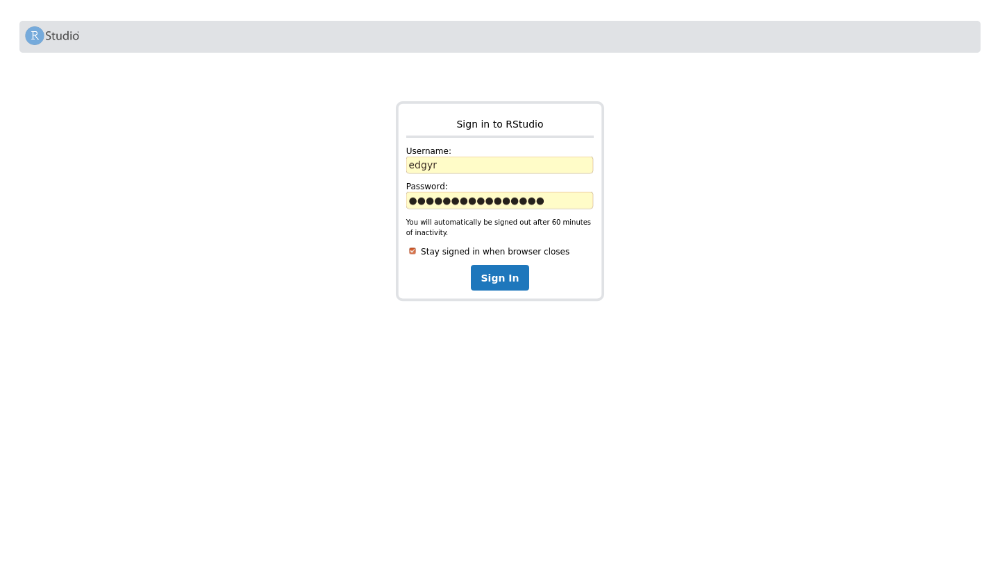
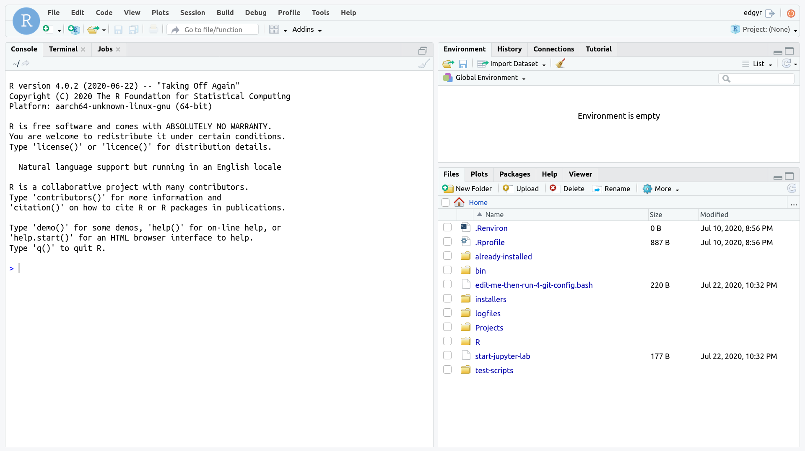
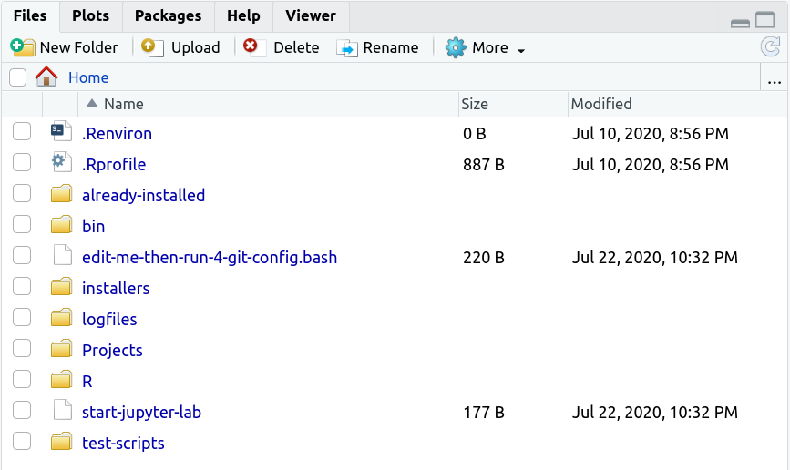

edgyR Containervignettes/ee-running-an-edgyr-container.Rmd
ee-running-an-edgyr-container.RmdOpen a terminal on the Jetson host machine. You can either do this from a terminal window at the host console or logged in remotely via secure shell (SSH).
Create a Projects directory and clone this repository into it.
mkdir --parents ~/Projects
cd ~/Projects
git clone https://github.com/znmeb/edgyR.git
cd edgyR/container-run-scriptsedgyr containerDownload the image: ./pull-image. You will need to enter your Jetson password to run sudo.
Define a new password for the edgyr account in the container. For security reasons, the container will exit if you do not do this. The new password must be at least 12 characters long. Set the new password in the environment variable EDGYR_PASSWORD. For example:
export EDGYR_PASSWORD="12.angry%characters"
Start the container with ./run-edgyr. You may have to enter your Jetson password for sudo again.
RStudio Server will start, listening on IP address 0.0.0.0 port 7878. You should see
./run-edgyr
Force-removing old 'edgyr' container
You can ignore errors if it doesn't exist
Error: No such container: edgyr
Running image znmeb/edgyr-ml:latest
fc04e5d9edbff7d2a7282d9680bd4db41009675ad1983d9e762e2c7144f2990c
CONTAINER ID IMAGE COMMAND CREATED STATUS PORTS NAMES
fc04e5d9edbf znmeb/edgyr-ml:latest "/docker-entrypoint.…" 6 seconds ago Up 5 seconds edgyr
Resetting 'edgyr' password
Starting RStudio Server - browse to port 7878 on Docker hostThe long hexadecimal string and container ID will be different on your system, but the rest should look like what’s above. Note that port 7878 is not the default RStudio Server port!
This script runs the edgyr container in detached mode. The processes in the container are running in the background, and you can use the terminal for other operations.
You can use the container two ways - you can either browse to the RStudio Server or log in to the command line from the terminal. Most users will want to use RStudio, so we’ll cover that first.
Browse to the server and log in. On the Jetson console, browse to localhost:7878. On a remote system, browse to port 7878 on the IP address of the Jetson host. Note that this is a different port number from the RStudio Server default port number!
For example, my Jetson Nano has IP address 192.168.254.23, so I browse to http://192.168.254.23:7878. The user name is edgyr and the password is the one you defined when you ran the container in step 3 above – the value you set in the EDGYR_PASSWORD variable before you started the container.

After you log in, you’ll see the RStudio Server web application page.

The RStudio Server web application page is the standard open source RStudio Server “desktop”. I find it useful to set the browser to full-screen mode when using it to minimize distractions.
The Files pane shows some of the extras that are installed on the image and are available to you in the container.

.Renviron and .Rprofile are the standard environment setting files; remember to restart your R session if you change them. already-installed contains the scripts that installed the R packages on the image; you don’t need to run them. bin is the directory where TinyTeX installed its executables.
edit-me-then-run-4-git-config.bash is a script you can edit and run to set your git configuration. If you’re going to use git, you’ll need to edit and then run it. installers contains scripts you can run to install add-ons. Currently the only available add-on is TensorFlow 2. logfiles contains compressed log files from all the software installs; gunzip them if you want to look at them.
Projects is an empty folder for you to store your projects. start-jupyter-lab starts a JupyterLab server; there is an entire vignette devoted to JupyterLab in vignette("kk-jupyter-lab"). test-scripts has some scripts you can run and use as examples.
There are two scripts to log in to the command line of the container: login-as-edgyr and login-as-root. Neither one requires a password. Normally you’ll want to log in as the non-root user edgyr. When you do, it will look like this:
$ ./login-as-edgyr
To run a command as administrator (user "root"), use "sudo <command>".
See "man sudo_root" for details.
edgyr@edgyr:~$ Note that you will need the edgyr password if you use sudo when logged in as edgyr.
What can you do at the command line? Pretty much anything you can do with bash, Julia, Python and R from the command line on any Linux system. The functionality is identical to a Terminal pane in RStudio Server.